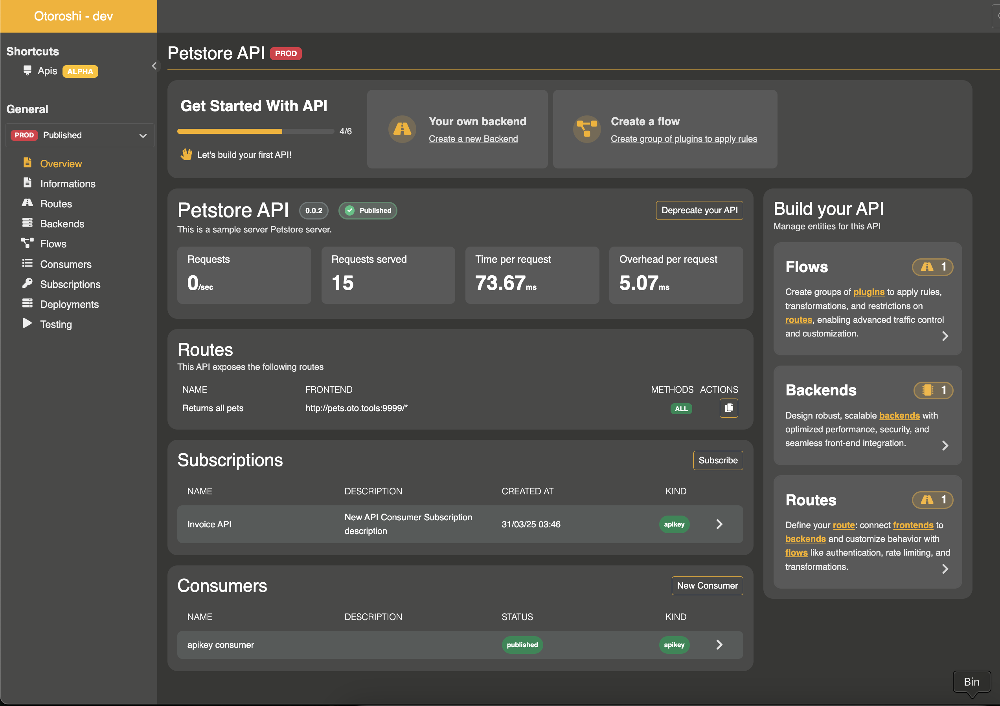

APIs
Otoroshi introduces a core entity: APIs. This feature marks a major step towards a more API Management-oriented experience by allowing users to manage their APIs as a whole, rather than configuring them route by route.
With the API entity, you can define reusable backends, declare multiple plugin flows that can be applied across different routes, manage consumers (plans) and subscriptions, and track the state of an API throughout its lifecycle.
This evolution unlocks powerful capabilities for building developer portals and brings Otoroshi closer to the expectations of a full-featured API Management platform.

UI page
You can find all APIs here
API entity properties
An API is the top-level entity that groups together routes, backends, flows, documentation, plans, subscriptions, and clients.
| Property | Type | Description |
|---|---|---|
id |
string | Unique identifier of the API |
name |
string | Display name of the API |
description |
string | Description of the API |
domain |
string | The domain on which the API is exposed (e.g., api.mydomain.com) |
context_path |
string | The base path prefix for all routes in this API (e.g., /api/v1) |
version |
string | Current version of the API (e.g., 1.0.0) |
versions |
array of string | List of all versions of this API |
enabled |
boolean | Whether the API is active and serving traffic |
state |
string | Lifecycle state: staging, published, deprecated, or removed |
blueprint |
string | API type: REST, GraphQL, gRPC, Http, or Websocket |
debug_flow |
boolean | Enable debug flow logging for all routes |
capture |
boolean | Enable request/response capture |
export_reporting |
boolean | Enable detailed reporting export |
groups |
array of string | Service groups this API belongs to |
tags |
array of string | Free tags for categorization |
metadata |
object | Free key/value metadata |
routes |
array of ApiRoute | The routes that compose this API |
backends |
array of ApiBackend | Backend definitions local to this API |
flows |
array of ApiFlows | Plugin flow chains |
clients_backend_config |
array of ApiBackendClient | Backend client configurations |
documentation |
ApiDocumentation | API documentation and developer portal configuration |
deployments |
array of ApiDeployment | Deployment history |
clients |
array of ApiClient | Registered API clients |
testing |
ApiTesting | Testing/draft mode configuration |
API lifecycle
An API goes through the following lifecycle states:
staging --> published --> deprecated --> removed
| State | Description |
|---|---|
staging |
The API is being designed. Only draft/testing routes are served (if testing is enabled). |
published |
The API is live and serving traffic. Plans can accept subscriptions. |
deprecated |
The API is still serving traffic but is marked for removal. No new subscriptions should be created. |
removed |
The API is deactivated. No traffic is served. |
API blueprints
The blueprint field indicates the type of API being managed:
- REST: Standard RESTful HTTP APIs
- GraphQL: GraphQL APIs
- gRPC: gRPC services
- Http: Generic HTTP services
- Websocket: WebSocket-based APIs
Routes
An API is composed of multiple routes. Each route describes an HTTP endpoint exposed by the API (e.g., GET /users, POST /orders).
A route is composed of a frontend (describing the entry point: domain, path, methods, headers), a reference to a backend, and a reference to a flow (plugin chain).
| Property | Type | Description |
|---|---|---|
id |
string | Unique identifier of the route |
name |
string | Display name of the route (optional) |
enabled |
boolean | Whether this route is active (default: true) |
frontend |
object | Frontend configuration (domains, paths, headers, methods, query, strip_path, exact) |
backend |
string | Reference to a backend ID (either a local API backend or a global stored backend) |
flow_ref |
string | Reference to a flow ID from this API’s flows list |
The route’s frontend paths are automatically prefixed with the API’s domain and context_path. For example, if the API has domain: api.example.com and context_path: /v1, and a route has a frontend path /users, the effective matching path will be api.example.com/v1/users.
A route can be enabled or disabled independently of the API’s activation.
Route JSON example
{
"id": "route_users_list",
"enabled": true,
"name": "List users",
"frontend": {
"domains": ["oto.tools/users"],
"strip_path": true,
"exact": false,
"headers": {},
"query": {},
"methods": ["GET"]
},
"backend": "api_backend_abc123",
"flow_ref": "default_plugin_chain"
}
Backends
A backend represents a list of target servers, along with its load balancing, health checks, and connection settings.
Backends can be defined locally within the API (in the backends array) or reference a global stored backend by its ID. This makes backends reusable across multiple APIs and routes.
| Property | Type | Description |
|---|---|---|
id |
string | Unique identifier of the backend |
name |
string | Display name of the backend |
backend |
object | Full backend configuration (targets, root, rewrite, load balancing, health checks, TLS, etc.) following the NgBackend format |
client |
string | Reference to a backend client configuration ID from clients_backend_config |
Backend JSON example
{
"id": "api_backend_abc123",
"name": "Users service backend",
"backend": {
"targets": [
{
"id": "target_1",
"hostname": "users-service.internal",
"port": 8080,
"tls": false,
"weight": 1
}
],
"root": "/",
"rewrite": false,
"load_balancing": { "type": "RoundRobin" }
},
"client": "default_backend_client"
}
Backend clients
Backend clients define the HTTP client configuration used when connecting to backend targets. They are referenced by backends using the client field.
| Property | Type | Description |
|---|---|---|
id |
string | Unique identifier |
name |
string | Display name |
client |
object | Client configuration (retries, timeouts, circuit breaker, connection pool, etc.) following the NgClientConfig format |
Backend client JSON example
{
"id": "default_backend_client",
"name": "Default client",
"client": {
"useCircuitBreaker": true,
"retries": 1,
"maxErrors": 20,
"retryInitialDelay": 50,
"backoffFactor": 2,
"callAndStreamTimeout": 120000,
"callTimeout": 30000,
"idleTimeout": 60000,
"globalTimeout": 30000,
"connectionTimeout": 10000
}
}
Flows
A flow is a named collection of plugins. Plugins are applied between the frontend and the backend (and vice versa) during request processing. Each route references a flow by ID.
| Property | Type | Description |
|---|---|---|
id |
string | Unique identifier of the flow |
name |
string | Display name of the flow |
plugins |
object | Plugin chain following the NgPlugins format |
A default flow named default_plugin_chain is automatically created with the OverrideHost plugin. You can add multiple flows to apply different plugin chains to different routes within the same API.
You can check the list of available plugins here.
Flow JSON example
{
"id": "authenticated_flow",
"name": "Authenticated flow",
"plugins": {
"slots": [
{
"plugin": "cp:otoroshi.next.plugins.OverrideHost",
"enabled": true,
"include": [],
"exclude": [],
"config": {}
},
{
"plugin": "cp:otoroshi.next.plugins.ApikeyCalls",
"enabled": true,
"include": [],
"exclude": [],
"config": {}
}
]
}
}
Documentation
The API documentation subsystem powers developer portal experiences. It supports pages, navigation sidebars, search, banners, logos, and external content sources.
| Property | Type | Description |
|---|---|---|
enabled |
boolean | Whether the documentation is active |
source |
object | Optional remote source to fetch documentation content (URL, headers, timeout, follow_redirects) |
home |
object | Home page resource |
logo |
object | Logo resource |
references |
array | List of external reference links (title, description, link, icon) |
resources |
array | List of documentation resources/pages |
navigation |
array | Sidebar navigation structure (categories and links) |
redirections |
array | URL redirections (from -> to) |
footer |
object | Footer resource (optional) |
search |
object | Search configuration (enabled: boolean) |
banner |
object | Banner resource (optional) |
plans |
array of ApiDocumentationPlan | Subscription plans with access modes and pricing |
metadata |
object | Documentation metadata |
tags |
array of string | Documentation tags |
Documentation resources
Each resource in the documentation can contain:
| Property | Type | Description |
|---|---|---|
path |
array of string | Path segments for URL routing |
title |
string | Page title |
description |
string | Page description |
content_type |
string | Content type (default: text/markdown) |
text_content |
string | Inline text content |
json_content |
object | Inline JSON content |
base64_content |
string | Base64-encoded binary content |
url |
string | Remote URL to fetch content from |
site_page |
boolean | Whether this resource is a standalone site page |
transform |
string | Content transformation to apply |
Plans
Plans (also referred to as consumers in the UI) define security policies and pricing for API access. Each plan specifies an access mode that determines how clients authenticate when calling the API.
| Property | Type | Description |
|---|---|---|
id |
string | Unique identifier of the plan |
name |
string | Display name of the plan |
description |
string | Description of the plan |
status |
string | Plan status: staging, published, deprecated, or closed |
access_mode_configuration_type |
string | Access mode type (see below) |
access_mode_configuration |
object | Access mode configuration (depends on type) |
pricing |
ApiPricing | Pricing configuration |
tags |
array of string | Tags |
metadata |
object | Metadata |
Access modes
Otoroshi supports the following access modes for plans:
| Mode | Description | Plugins applied |
|---|---|---|
keyless |
No authentication required. Open access. | None |
apikey |
Requires a valid API key. Configurable key patterns, restrictions, quotas, and rotation. | ApikeyCalls |
jwt |
Requires a valid JWT token with expected signature. | JwtUserExtractor |
mtls |
Requires a valid TLS client certificate matching configured subject/issuer patterns. | HasClientCertMatchingValidator |
oauth2-local |
OAuth2 client credentials flow with local token generation. Clients obtain a JWT to call other routes. | ApikeyCalls + client credentials endpoint |
oauth2-remote |
OAuth2 with remote token introspection via an external OIDC provider. | OIDCJwtVerifier |
Apikey access mode configuration
| Property | Type | Description |
|---|---|---|
clientIdPattern |
string | Regex pattern for generated client IDs |
clientNamePattern |
string | Regex pattern for generated client names |
description |
string | Description for generated API keys |
authorizedEntities |
array | Entities the API key is authorized on |
enabled |
boolean | Whether generated keys are enabled |
readOnly |
boolean | Whether generated keys are read-only |
allowClientIdOnly |
boolean | Allow authentication with client ID only (no secret) |
constrainedServicesOnly |
boolean | Restrict to constrained services only |
restrictions |
object | Access restrictions (allowed/forbidden paths and methods) |
rotation |
object | Key rotation configuration (enabled, rotationEvery, gracePeriod) |
validUntil |
number | Expiration timestamp (milliseconds) |
tags |
array of string | Tags for generated keys |
metadata |
object | Metadata for generated keys |
Plan JSON example
{
"id": "plan_free_tier",
"name": "Free Tier",
"description": "Free access with rate limiting",
"status": "published",
"access_mode_configuration_type": "apikey",
"access_mode_configuration": {
"enabled": true,
"readOnly": false,
"allowClientIdOnly": false,
"constrainedServicesOnly": false,
"restrictions": {
"enabled": false
},
"rotation": {
"enabled": false,
"rotationEvery": 744,
"gracePeriod": 168
},
"tags": [],
"metadata": {}
},
"pricing": {
"id": "pricing_free",
"name": "Free",
"enabled": true,
"price": 0,
"currency": "EUR",
"params": {}
},
"tags": [],
"metadata": {}
}
Pricing
Plans can include pricing information for monetization purposes.
| Property | Type | Description |
|---|---|---|
id |
string | Unique identifier |
name |
string | Pricing plan name |
enabled |
boolean | Whether pricing is active |
price |
number | Price amount |
currency |
string | Currency code (e.g., EUR, USD) |
params |
object | Additional pricing parameters |
Subscriptions
End-users (developers, portals, machines) can subscribe to published plans. A subscription contains information about the subscriber and references to the generated credentials (API key, certificate, JWT, etc.).
| Property | Type | Description |
|---|---|---|
id |
string | Unique identifier |
name |
string | Display name |
description |
string | Description |
enabled |
boolean | Whether the subscription is active |
api_ref |
string | Reference to the parent API |
plan_ref |
string | Reference to the plan |
owner_ref |
string | Reference to the subscribing client |
subscription_kind |
string | Kind of subscription: apikey, mtls, keyless, oauth2-local, oauth2-remote, jwt |
token_refs |
array of string | References to generated credentials (API key IDs, certificate IDs, etc.) |
dates |
object | Lifecycle timestamps (see below) |
tags |
array of string | Tags |
metadata |
object | Metadata |
Subscription dates
| Property | Type | Description |
|---|---|---|
created_at |
number | Timestamp when subscription was created |
processed_at |
number | Timestamp when subscription was processed |
started_at |
number | Timestamp when subscription became active |
paused_at |
number | Timestamp when subscription was paused |
ending_at |
number | Timestamp when subscription will end |
closed_at |
number | Timestamp when subscription was closed |
Subscription JSON example
{
"id": "subscription_abc123",
"name": "ACME Corp subscription",
"description": "Free tier subscription for ACME Corp",
"enabled": true,
"api_ref": "api_users_service",
"plan_ref": "plan_free_tier",
"owner_ref": "client_acme",
"subscription_kind": "apikey",
"token_refs": ["apikey_xyz789"],
"dates": {
"created_at": 1710000000000,
"processed_at": 1710000000000,
"started_at": 1710000000000,
"paused_at": 1710000000000,
"ending_at": 1710000000000,
"closed_at": 1710000000000
},
"tags": [],
"metadata": {}
}
API clients
Clients represent the consumers that subscribe to your API. They are lightweight entities used to identify subscribers.
| Property | Type | Description |
|---|---|---|
id |
string | Unique identifier |
name |
string | Client name |
description |
string | Description |
tags |
array of string | Tags |
metadata |
object | Metadata |
Testing
The testing configuration allows you to test draft routes before publishing the API. When testing is enabled, Otoroshi generates special routes from the API’s draft with a custom header requirement.
| Property | Type | Description |
|---|---|---|
enabled |
boolean | Whether testing mode is active |
headerKey |
string | Header name required to access draft routes (default: X-OTOROSHI-TESTING) |
headerValue |
string | Expected header value (auto-generated UUID) |
When testing is enabled:
- Draft routes are built from the latest saved draft of the API
- Each draft route requires the testing header (
X-OTOROSHI-TESTING: <value>) to be accessible - This allows you to test changes without affecting published routes
Deployments
Deployments track the history of API publications. Each time an API is published (its state transitions from staging to published), a deployment record is created.
| Property | Type | Description |
|---|---|---|
id |
string | Unique identifier |
apiRef |
string | Reference to the API |
owner |
string | Who performed the deployment |
at |
number | Timestamp of the deployment |
apiDefinition |
object | Snapshot of the API definition at deployment time |
version |
string | Version of the API at deployment time |
OpenAPI import
Otoroshi can generate an API entity from an OpenAPI specification. When importing from an OpenAPI document:
- The API name, description, and version are extracted from the
infosection - Server URLs are mapped to backend targets
- Each path and method combination is converted to an API route
- Both JSON and YAML formats are supported
Complete API JSON example
{
"id": "api_users_service",
"name": "Users Service",
"description": "API for managing users",
"domain": "api.example.com",
"context_path": "/v1",
"version": "1.0.0",
"versions": ["1.0.0"],
"enabled": true,
"state": "published",
"blueprint": "REST",
"debug_flow": false,
"capture": false,
"export_reporting": false,
"groups": ["default"],
"tags": ["users", "core"],
"metadata": {
"team": "platform"
},
"backends": [
{
"id": "users_backend",
"name": "Users backend",
"backend": {
"targets": [
{
"id": "target_1",
"hostname": "users-service.internal",
"port": 8080,
"tls": false,
"weight": 1
}
],
"root": "/",
"rewrite": false,
"load_balancing": { "type": "RoundRobin" }
},
"client": "default_backend_client"
}
],
"clients_backend_config": [
{
"id": "default_backend_client",
"name": "Default client config",
"client": {
"useCircuitBreaker": true,
"retries": 1,
"callTimeout": 30000,
"globalTimeout": 30000
}
}
],
"flows": [
{
"id": "default_plugin_chain",
"name": "Default flow",
"plugins": {
"slots": [
{
"plugin": "cp:otoroshi.next.plugins.OverrideHost",
"enabled": true,
"include": [],
"exclude": [],
"config": {}
}
]
}
}
],
"routes": [
{
"id": "route_list_users",
"enabled": true,
"name": "List users",
"frontend": {
"domains": ["oto.tools/users"],
"strip_path": true,
"exact": false,
"headers": {},
"query": {},
"methods": ["GET"]
},
"backend": "users_backend",
"flow_ref": "default_plugin_chain"
},
{
"id": "route_create_user",
"enabled": true,
"name": "Create user",
"frontend": {
"domains": ["oto.tools/users"],
"strip_path": true,
"exact": false,
"headers": {},
"query": {},
"methods": ["POST"]
},
"backend": "users_backend",
"flow_ref": "default_plugin_chain"
}
],
"documentation": {
"enabled": true,
"plans": [
{
"id": "plan_free",
"name": "Free Tier",
"description": "Free access with API key",
"status": "published",
"access_mode_configuration_type": "apikey",
"access_mode_configuration": {
"enabled": true,
"readOnly": false,
"allowClientIdOnly": false,
"tags": [],
"metadata": {}
},
"pricing": {
"id": "pricing_free",
"name": "Free",
"enabled": false,
"price": 0,
"currency": "EUR",
"params": {}
}
}
],
"home": {},
"logo": {},
"references": [],
"resources": [],
"navigation": [],
"redirections": [],
"search": { "enabled": true },
"metadata": {},
"tags": []
},
"clients": [
{
"id": "client_acme",
"name": "ACME Corp",
"description": "ACME Corp developer account",
"tags": [],
"metadata": {}
}
],
"testing": {
"enabled": false,
"headerKey": "X-OTOROSHI-TESTING",
"headerValue": "secret-test-value"
},
"deployments": []
}
Admin API
The API entity can be managed through the admin API:
GET /api/apis # List all APIs
POST /api/apis # Create a new API
GET /api/apis/:id # Get an API by ID
PUT /api/apis/:id # Update an API
DELETE /api/apis/:id # Delete an API
PATCH /api/apis/:id # Partially update an API
Subscriptions are managed at:
GET /api/api-subscriptions # List all subscriptions
POST /api/api-subscriptions # Create a subscription
GET /api/api-subscriptions/:id # Get a subscription
PUT /api/api-subscriptions/:id # Update a subscription
DELETE /api/api-subscriptions/:id # Delete a subscription
Related entities
- Routes - The route entity that API routes are converted into at runtime
- Backends - Global reusable backends that can be referenced by API backends
- API Keys - Credentials generated when subscribing with
apikeyaccess mode - Certificates - Certificates used with
mtlsaccess mode - JWT Verifiers - Verifiers used with
jwtandoauth2-remoteaccess modes